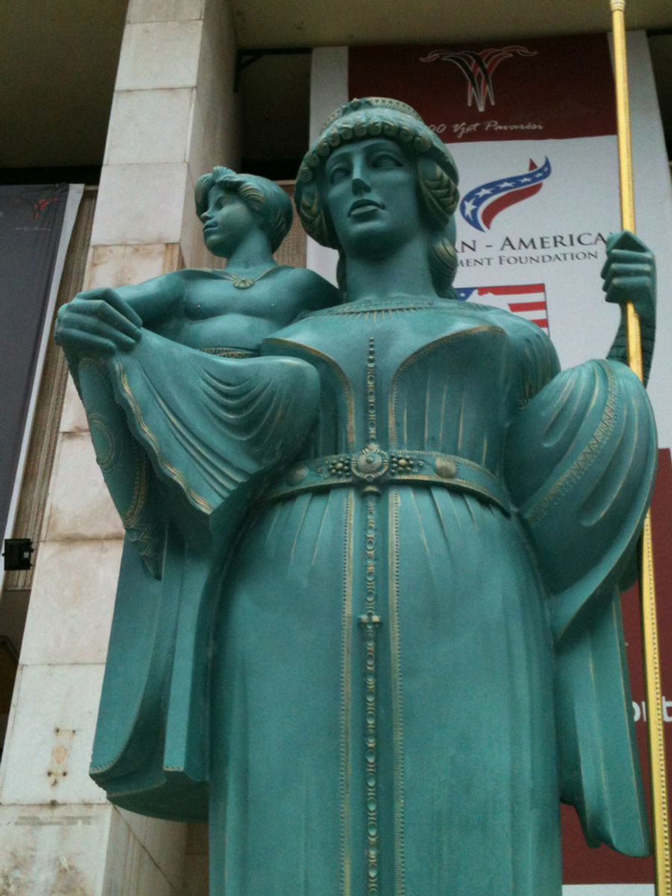
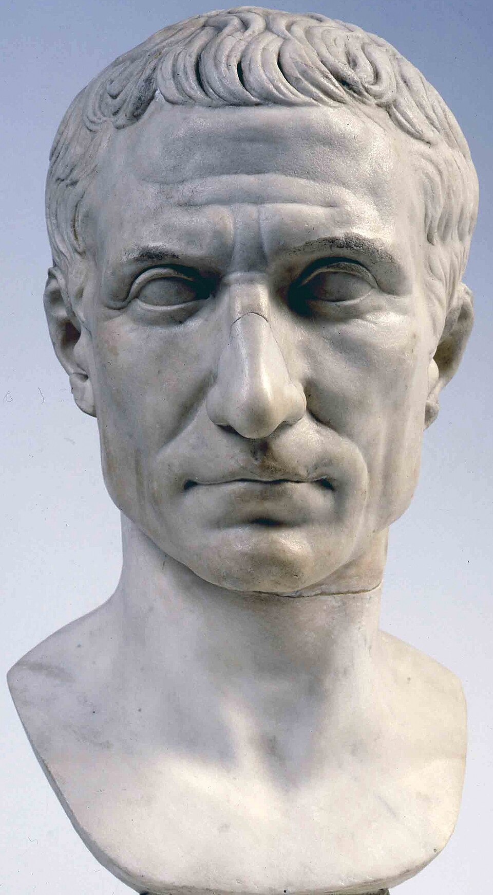
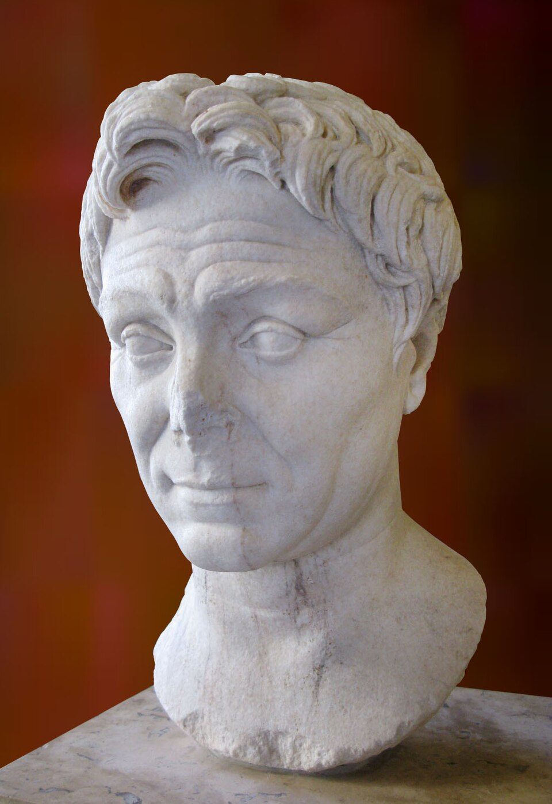
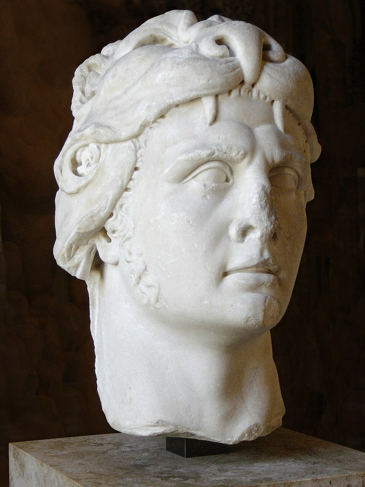
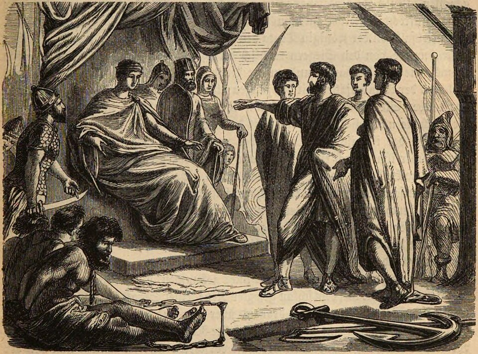
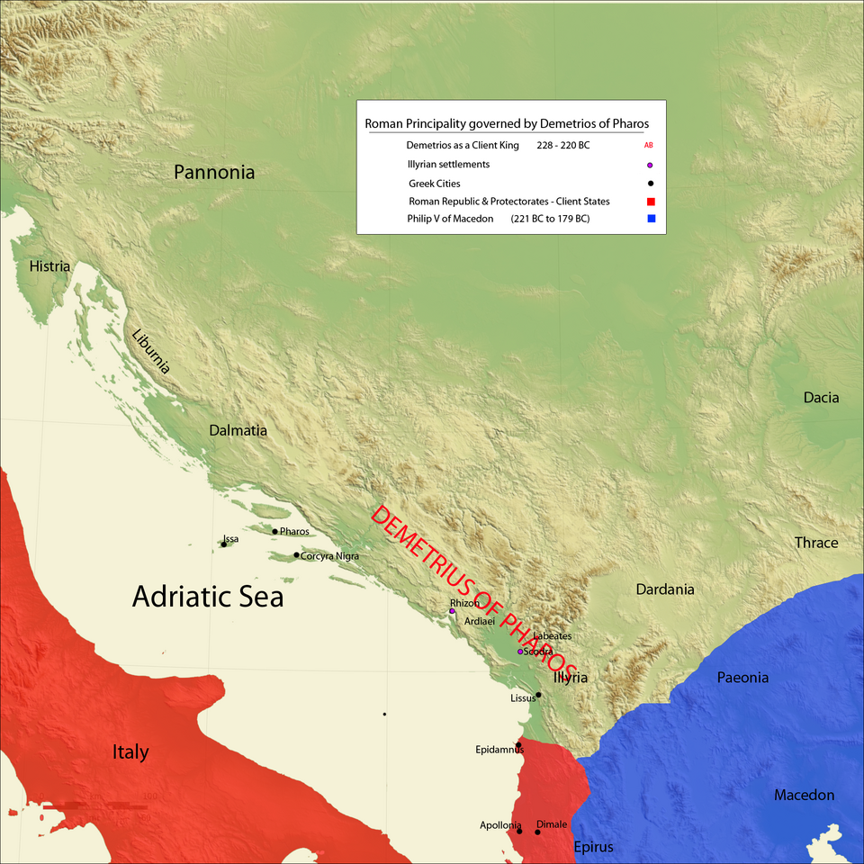
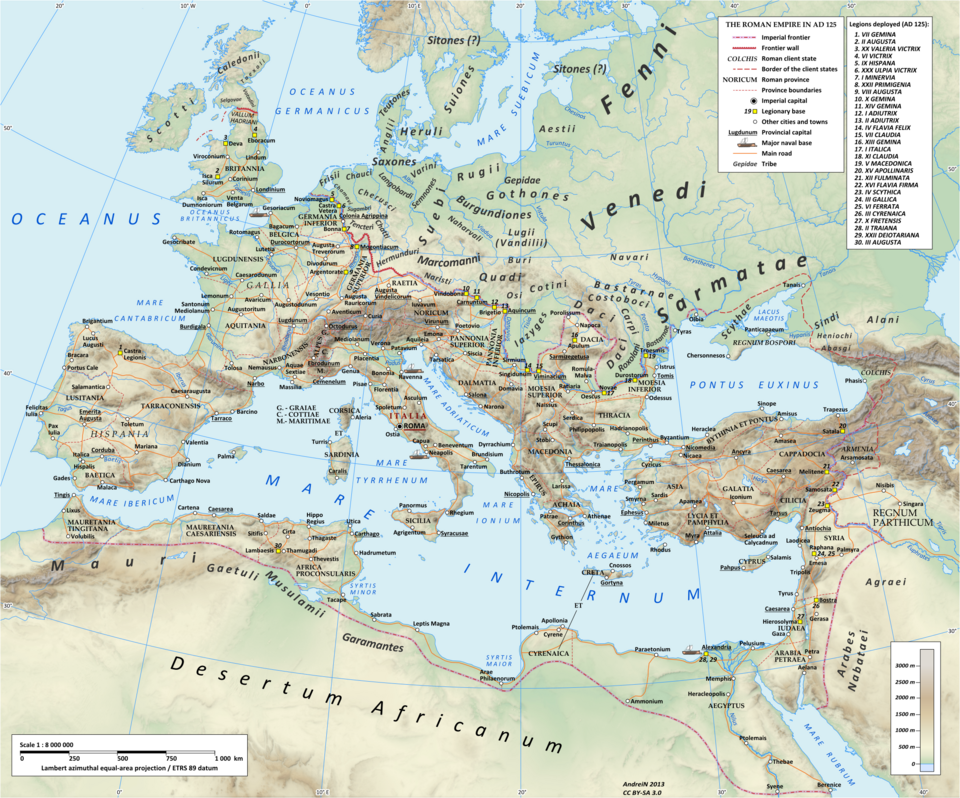
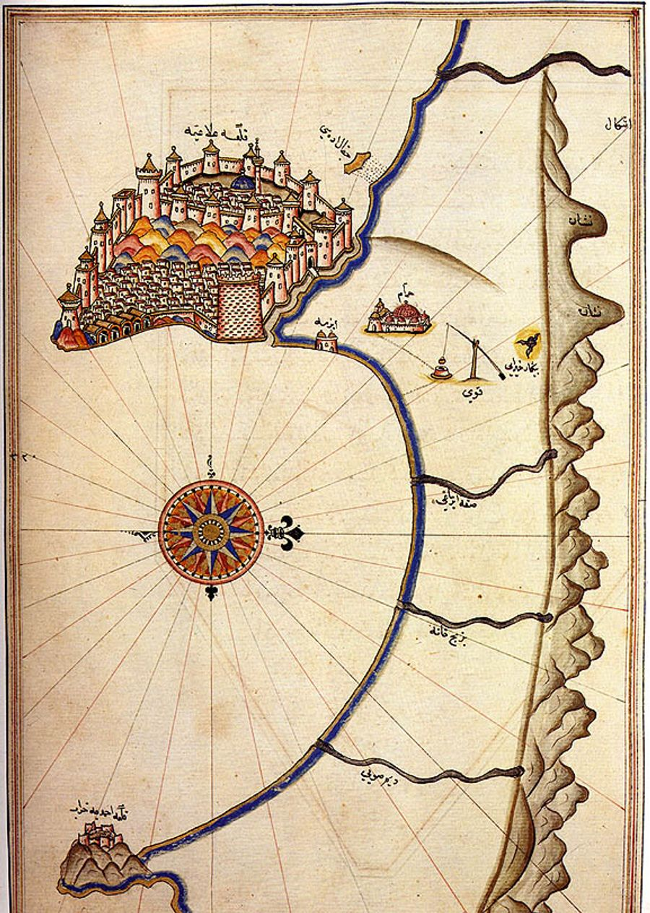

Art der Piraterie
In der Antike war Seeraub im Mittelmeer keine einheitliche „Berufsgilde“, sondern ein Spektrum. Es gab Küstenüberfälle und Schiffsentführungen mit schnellen, wendigen Booten (etwa dem illyrischen Lembus), die Handelsrouten und Häfen angriffen und sich in Buchten und Felsküsten versteckten. Parallel existierte staatlich geduldete oder sogar geförderte Beutefahrt: Im Krieg galt das Aufbringen feindlicher Schiffe oft als legitim, solange die Beute dem Gemeinwesen zugute kam. Wirtschaftlich war Piraterie eng mit dem Sklavenhandel verknüpft. Gefangene wurden auf Märkten wie Delos verkauft; gerade Rom profitierte lange vom Nachschub an Sklaven und griff deshalb zunächst zögerlich ein. Typisch waren auch Tempelplünderungen und die Erpressung von Lösegeldern für angesehene Gefangene.
Hauptcharaktere





- Seevölker (ca. 13.–12. Jh. v. Chr.): lose Koalition verschiedener Gruppen, die Küsten und Reiche im östlichen Mittelmeer verwüsteten.
- Königin Teuta (Illyrien, reg. ca. 231–227 v. Chr.): duldete bzw. förderte Piraterie ihrer Untertanen, solange andere Völker getroffen wurden; Konflikt mit Rom.
- Demetrios von Pharos: nach Teuta von Rom gestützt, kehrte er zur Piraterie zurück und löste den Zweiten Illyrischen Krieg aus.
- Zeniketes: Seeräuberfürst mit kurzzeitigem Herrschaftsgebiet um Olympos, Korykos und Phaselis; starb bei der Erstürmung seiner Festung (77 v. Chr.).
- Gaius Iulius Caesar: 75/74 v. Chr. von Piraten bei Pharmakussa gefangen; forderte selbst höheres Lösegeld, ließ die Entführer nach seiner Freilassung kreuzigen.
- Gnaeus Pompeius Magnus: 67 v. Chr. mit der Lex Gabinia beauftragt, beendete die kilikische Seemacht systematisch.
- Mithridates VI. von Pontos: laut antiken Quellen eng mit den Piraten verbunden und förderlich für deren Organisation.

Was geschah

Schon in der Bronzezeit berichten ägyptische Amarna-Briefe von Küstenräubern (u. a. Lukka). Die Seevölker trugen zum Zusammenbruch mehrerer Staaten bei. In klassischer und hellenistischer Zeit galten unter anderem Tyrrhener, Kreter und Illyrer als Seeräuber. Rhodos dämmte die Ägäis-Piraterie zeitweise mit Patrouillen und bewaffneten Handelsschiffen ein, bis Roms Zollfrei-Hafen Delos (ab 167 v. Chr.) Rhodos wirtschaftlich schwächte und der Seeraub wieder aufblühte.
Im 2./1. Jh. v. Chr. entstand aus dem Machtvakuum nach dem Niedergang der Seleukiden die sogenannte kilikische Piraterie: gut organisiert, mit Stützpunkten von Kleinasien bis weit in den Westen, oft prunkvoll auftretend und zentral im Sklavenhandel. Frühere römische Feldzüge (Marcus Antonius Orator, Servilius Vatia Isauricus, Aktionen gegen Kreta) brachten nur Teilerfolge. Als Piraten italienische Küsten überfielen, Prätoren entführten und die Getreideversorgung Roms gefährdeten, eskalierte die Lage.
Wie begann es
Seeraub beginnt praktisch mit dem Seeverkehr selbst. Frühe Zeugnisse reichen bis ins 14. Jh. v. Chr. zurück. Die große kilikische Welle hat klarere Ursachen: Nach dem Frieden von Apameia (188 v. Chr.) fehlte im Osten eine starke Seeordnung; Söldner und Küstenbewohner (u. a. aus rauer kilikischer Landschaft) fanden im Raub und Sklavenverkauf Profit. Mithridatische Kriege und der Boom des Sklavenmarkts Delos verstärkten das System. Rom tolerierte die Piraterie anfangs, weil sie den eigenen Sklavenbedarf deckte.
Wie endete es

Ein „endgültiges“ Ende der antiken Piraterie gab es nicht. Der dramatische Einschnitt war Pompeius’ Kampagne 67 v. Chr.: Mit der Lex Gabinia erhielt er außergewöhnliche Vollmachten über das gesamte Mittelmeer und die Küstenstreifen. Er teilte das Meer in Bezirke, räumte sie systematisch und schlug die Piratenflotte vor Korakesion (heute Alanya). Viele ergaben sich; Pompeius ließ sie oft am Leben und siedelte sie als Bauern an (u. a. in Soloi/Kilikien und Dyme in Achaia). Handel und Getreidewege wurden kurzfristig gesichert.
Historiker betonen aber: Solange Sklavenmärkte und schwache Küstenordnung bestanden, kehrte Seeraub zurück. Auch unter dem Kaiserreich blieb Piraterie ein Problem, und nach dem Ende Westroms setzte sie sich im Mittelmeer fort.
Quellen
- World History Encyclopedia – Pirates in the Ancient Mediterranean: https://www.worldhistory.org/Piracy/
- World History Encyclopedia – Timeline Piracy: https://www.worldhistory.org/timeline/Piracy/
- Wikipedia – Kilikische Seeräuber: https://de.wikipedia.org/wiki/Kilikische_Seeräuber
- Wikipedia – Cilician pirates: https://en.wikipedia.org/wiki/Cilician_pirates
- Wikipedia – Lex Gabinia: https://de.wikipedia.org/wiki/Lex_Gabinia
- Plutarch (über Caesar und Pompeius) sowie Appian, Strabon und Sueton, wie in den oben genannten Überblickswerken ausgewertet.
- Bildquellen: Wikimedia Commons (u. a. Medinet Habu / Seevölker, Teuta, Caesar-Büste, Pompeius-Louvre, Mithridates-Louvre, Leutemann-Gemälde, Demetrios-Karte, Piri-Reis Alanya).